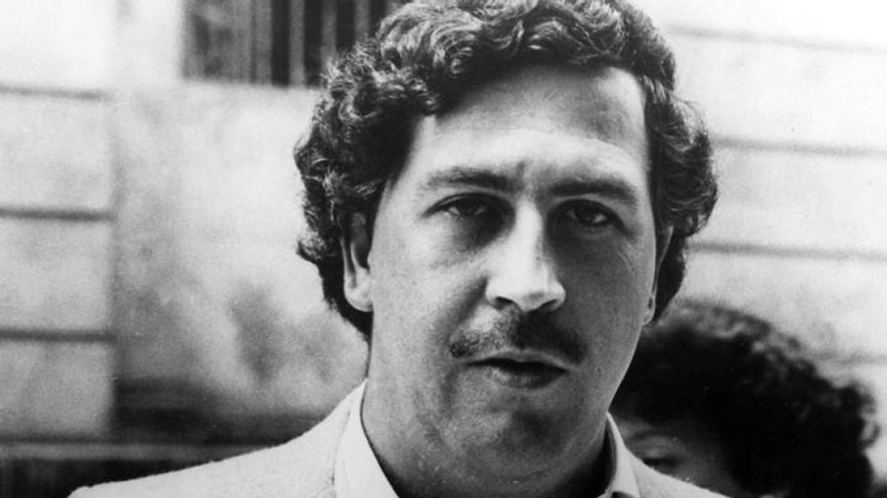
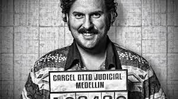
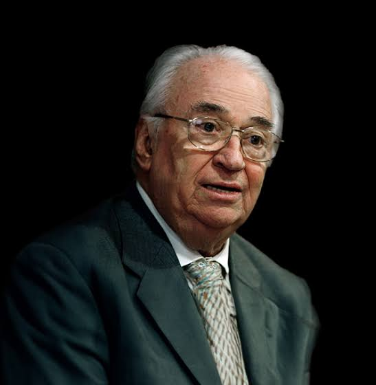

Pablo Escobar Gaviria
Fue un narcotraficante colombiano, fundador y líder del Cártel de Medellín, con el que llegó a ser el hombre más poderoso de la mafia colombiana y uno de los personajes más ricos de su época. Fue suplente en la Cámara de Representantes de Colombia para el Congreso de la República de Colombia por el departamento de Antioquia en 1982.

Biografia
Pablo Escobar nació el 1 de diciembre de 1949 en Colombia. Creció en una familia de clase media baja en el suburbio de Envigado, en la ciudad colombiana de Medellín. De joven, ya se podía apreciar su gran ambición, repitiendo constantemente a sus allegados que quería ser el presidente de Colombia algún día. Evidentemente, su sueño nunca se cumplió, pero sus aspiraciones dejan claro que tenía un gran afán por destacar. Algo que sí logró, aunque de forma ilícita.
La carrera de Escobar como delincuente se inició en las calles, cuando comenzó a robar lápidas en los cementerios para vender el mármol y ganarse unos pesos. También se dedicó al contrabando de tabaco y de alcohol, para después traer pasta de coca de Bolivia y Perú a través de Ecuador, escondiendo la mercancía en las llantas de los camiones. Tras refinarla, la transportaba a Estados Unidos para venderla. Ahí sería consumida en forma de cocaína.

Desarrollo de ssu carrera
Nacido de una familia campesina, Escobar desde pequeño demostraría habilidad para los negocios. Inició su vida delictiva a finales de la década de 1960 en el contrabando y, a finales de la década de 1970, se involucró en la producción y comercialización de marihuana y cocaína al exterior.
Ver mas detalles
Para 1985, el narcotráfico ya estaba en pleno auge y asimismo los carteles dominaban a Colombia, lo que desató una guerra contra el Gobierno, encabezado en ese entonces por Belisario Betancur.

Este último fue quien había puesto a Rodrigo Lara Bonilla como ministro de Justicia, el cual había señalado a narcotraficantes que estaban involucrados en política, economía, inclusive en el mundo del fútbol. Los narcos tenían ejércitos privados, negocios por todo Colombia, grandes extensiones de tierras y el control de mercados como el de las esmeraldas. Más adelante, Lara desmanteló el laboratorio de cocaína más grande del Cartel de Medellín, Tranquilandia, y decomisaría treinta aviones del mismo grupo. La guerra de los narcos contra el Gobierno se tornó violenta y sádica.

Fuente Wikipedia